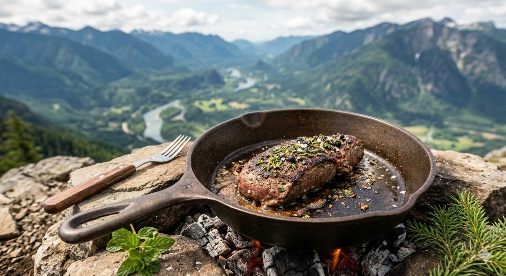

Campfire-Seared Wild Venison
There is nothing quite like the reward of a hot, wild-foraged meal after a grueling backcountry hike. Whether you're recovering from the elevation gain of the Mount Si trail or settling in for the night near the freezing, pristine waters of Snow Lake, this venison recipe utilizes local, hand-picked Douglas fir tips and wild mint to bring the taste of the deep woods straight to your campfire skillet.

Ingredients
- The Meat
- 1 lb wild venison backstrap, at ambient temperature
- The Foraged Rub
- 2 tbsp fresh Douglas fir tips, finely chopped
- 1 tbsp wild field mint, minced
- 1 tbsp coarse sea salt
- 1 tsp crushed juniper berries
Preparation Steps
- Prepare the Fire:
- Build a sustainable, hot hardwood campfire.
- Let the wood burn down for 45 minutes until you have glowing, white-hot coals.
- Prepare the Venison:
- Mix the chopped Douglas fir tips, wild mint, sea salt, and juniper to create your dry rub.
- Generously massage the rub into all sides of the backstrap.
- The Sear:
- Place your cast-iron skillet directly onto the hot coals until lightly smoking.
- Sear the venison for 3 to 4 minutes per side for a perfect medium-rare.
- The Rest:
- Remove from the heat and let the meat rest on a flat stone or cutting board for 10 minutes.
- Slice thinly against the grain before serving.